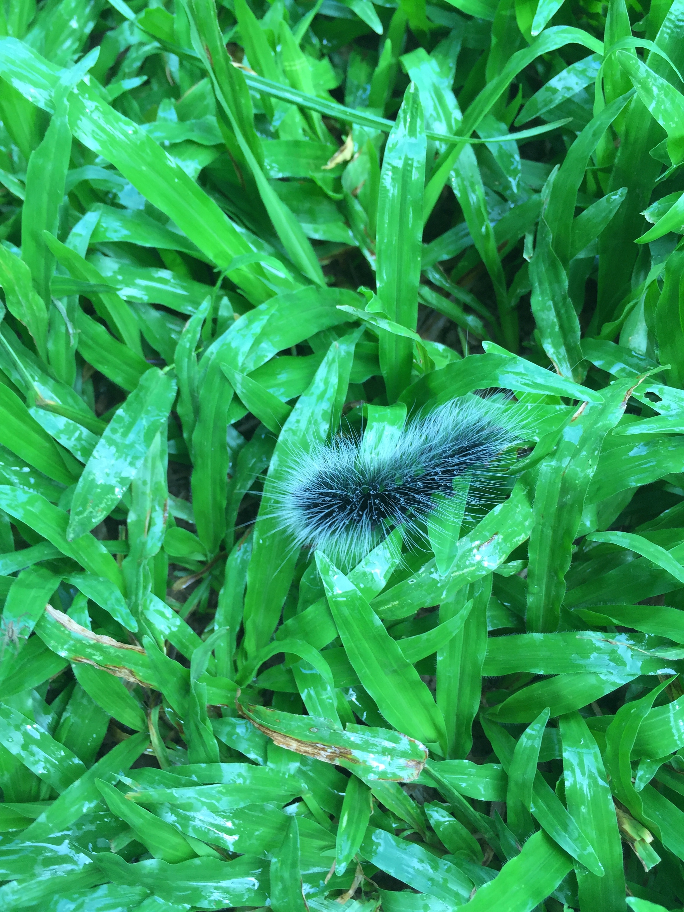

On the long walk to the Living Root Bridges in Cherrapunjee, I came across many animals that I had never seen before. I saw several butterflies, caterpillars, bugs, and annelids in visible sight even in the drizzle.
I came across two of these kinds of caterpillars which were similar yet dissimilar. What caught my attention and consequently my interest were the hairs that covered the bodies of both these caterpillars. Cherrapunjee has the maximum rainfall in the world, so my guess at the reason for such an adaptation is to increase surface area to help in evaporation of water.
Upon further research, I found out that most caterpillars have hair called setae that are too sparse and small to be noticed by the naked eye. But populations of caterpillars with excessive hairs are restricted to North America and the British Isles. The dense hairs, in fact, provide it with protection from predators and are a part of the caterpillar’s survival strategy.
I wasn't able to find out the correct scientific names of these organisms but if any of know you can comment down below.
These caterpillars were very common along the way, walking on lichen covered rocks, temporary bridges and metal railings on small red boot-like feet.The distribution of hair on the body varied from individual to individual, appearing dense in some but sparser in others. They appeared to be feeding on leaves and lichens.
